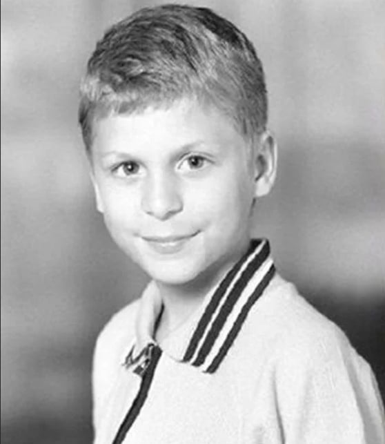
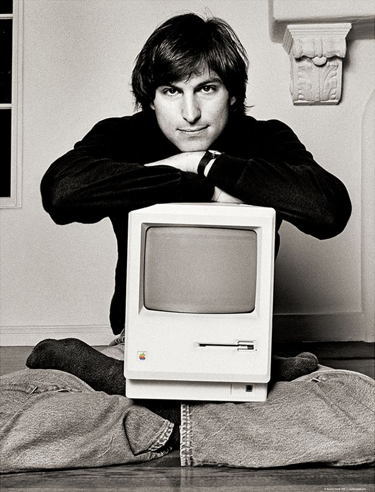
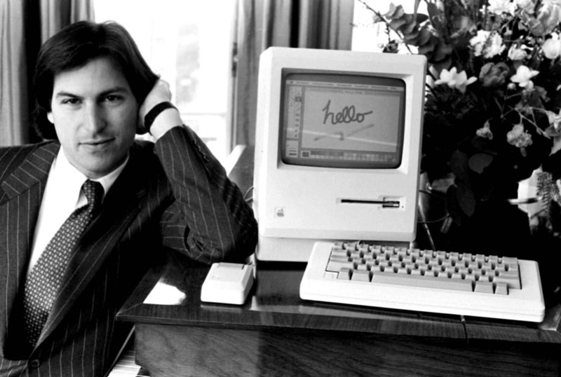
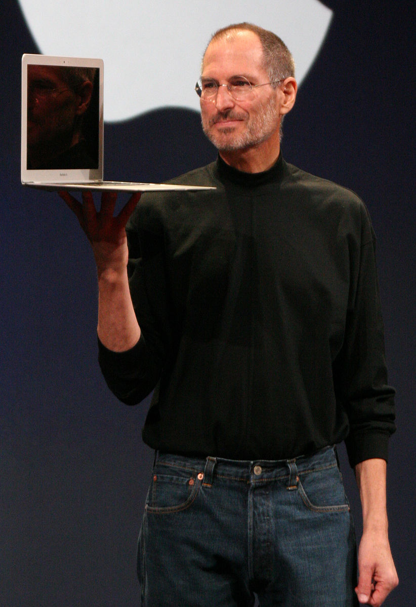

Краткая биография
Стив Джобс родился 24 февраля 1955 года в городе Сан-Франциско, штат Калифорния. Его биологическая мать, Джоан Шибл, была молодой незамужней студенткой, и она решила отдать Стива на усыновление. Полные имена его приемных родителей были Кларенс и Полин Швэбель. Джобс рос в Маунтин-Вью, небольшом городке в Калифорнии, в семье, где ценились инженерные и научные знания. Его отец, Пол, был механиком и часто проводил время с Стивом, учась ему различным мастерским навыкам. Он также познакомил Стива с электроникой и радио, что позже стало для него увлечением. В детстве Джобс проявил интерес к технике и инженерии. Вместе с другом Стивом Возняком он посещал занятия в Хомстиде, школе, где учились энтузиасты электроники. Они также проводили время в гараже у Возняковых, экспериментируя с различными электронными устройствами. После окончания школы Джобс поступил в Рид-колледж в Орегоне, где изучал литературу, философию и физику. Однако он не задержался в колледже надолго и вскоре бросил его, ходатайствуя о посещении только интересующих его лекций. Детство Стива Джобса сильно повлияло на его страсть к технологиям и инновациям, и он стал одним из самых влиятельных и визионерных предпринимателей в сфере высоких технологий.
В молодости Стив Джобс продолжал исследовать свою страсть к технологиям и инновациям. После того, как он покинул Рид-колледж, он отправился в Индию в поисках духовной просветленности. Там он практиковал медитацию и стал интересоваться восточной философией. По возвращении в США Джобс присоединился к компьютерной компании Atari, где работал над разработкой игровых устройств. В это время он также начал дружить с Стивом Возняком, который разрабатывал собственные компьютерные платы. В 1976 году Джобс и Возняк собрались вместе и основали Apple Computer Company в гараже родителей Джобса. Их целью было создать компьютер, который был бы прост в использовании и доступен для широкой аудитории. Их первым продуктом стал Apple I, первый персональный компьютер, который включал только плату и требовал отдельной клавиатуры и монитора. С успехом Apple I последовал выпуск Apple II в 1977 году, который стал первым массовым успешным персональным компьютером. Apple II предложил интуитивный интерфейс, графические возможности и даже поддержку цветного изображения, что было революционным для того времени. В следующие годы Джобс и Apple продолжили инновации и создали Macintosh в 1984 году, который предлагал еще более простой в использовании интерфейс с использованием графического пользовательского интерфейса. Однако разногласия с руководством Apple привели к тому, что Джобс был уволен из своей собственной компании в 1985 году. После ухода из Apple Джобс основал компанию NeXT, которая специализировалась на разработке компьютеров для бизнес-сектора. В 1986 году он также приобрел Pixar Animation Studios, которая впоследствии стала ведущей компанией в области компьютерной анимации. Успех Pixar проявился в выпуске таких фильмов, как "История игрушек", "В поисках Немо" и "Вверх". В 1996 году Apple приобрела компанию NeXT, а Джобс вернулся в Apple в качестве консультанта. Вскоре он стал главным исполнительным директором компании. Под его руководством Apple пережила впечатляющий виток, выпустив такие продукты, как iPod, iPhone и iPad, которые стали неотъемлемой частью повседневной жизни многих людей. Стив Джобс оставил незабываемый след в индустрии высоких технологий своими инновационными идеями, дизайном и стремлением к совершенству.
К сожалению, Стив Джобс ушел из жизни 5 октября 2011 года в Пало-Альто, штат Калифорния, в возрасте 56 лет. Он боролся с редким формой рака поджелудочной железы, с которым ему было диагностировано в 2003 году. Впрочем, даже в своей старости Джобс продолжал активно работать и вносить вклад в развитие Apple. Он провел успешные презентации новых продуктов, таких как iPhone 4, iPad 2 и iCloud. Однако его здоровье ухудшалось, и в 2011 году он ушел в отставку с поста главного исполнительного директора Apple, передав его Тиму Куку. После ухода в отставку, Джобс провел остаток своего времени семьей и близкими людьми. Он также продолжал давать советы и руководство в Apple, особенно в отношении разработки новых продуктов. Стив Джобс оставил неизгладимый след в технологической индустрии и его наследие продолжает влиять на дизайн, инновации и пользовательский опыт продуктов Apple. Его вклад в развитие компьютеров, музыки, мобильных устройств и анимации останется незабываемым.
